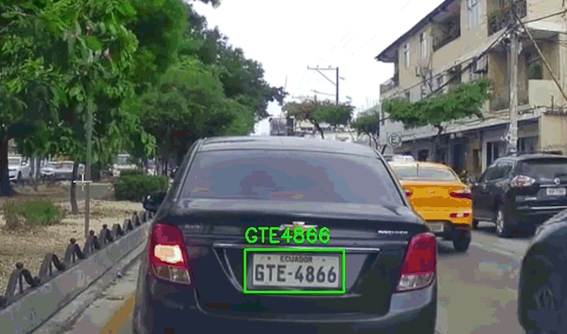
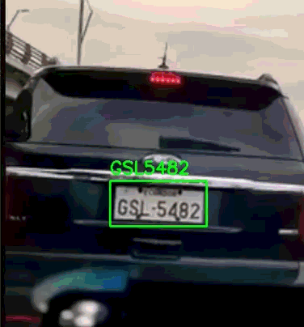

Problema
El monitoreo vehicular en recintos urbanos suele depender de supervisión humana o registros manuales, lo que puede generar errores, retrasos y dificultad para identificar eventos relevantes en tiempo real.
Inteligencia artificial · Visión por computadora · Monitoreo vehicular
Desarrollo de un sistema de visión por computadora para el reconocimiento de placas vehiculares, registro de eventos de entrada y salida, y monitoreo automatizado en un recinto urbano mediante procesamiento de video en tiempo real.
Volver a proyectos
El monitoreo vehicular en recintos urbanos suele depender de supervisión humana o registros manuales, lo que puede generar errores, retrasos y dificultad para identificar eventos relevantes en tiempo real.
Se implementó un sistema automatizado de visión por computadora capaz de detectar vehículos, reconocer placas y registrar eventos de entrada y salida para mejorar el control vehicular dentro del recinto.
El sistema procesa secuencias de video provenientes de las cámaras del recinto para identificar vehículos en zonas de monitoreo.
Se utiliza visión por computadora para localizar vehículos dentro de la escena y preparar la región de interés para el análisis de placa.
Se integra una etapa de reconocimiento de caracteres para extraer la información de la placa vehicular a partir de la imagen procesada.
La lógica temporal del sistema permite registrar ingresos, salidas, permanencia y reincidencia de paso de los vehículos detectados.
Se identificaron los requerimientos del recinto: reconocimiento de placas, control de eventos y operación en condiciones reales de monitoreo.
Se estructuró el procesamiento de video para detectar vehículos, aislar zonas relevantes y alimentar la etapa de reconocimiento.
Se integraron modelos y bibliotecas de visión por computadora para extraer información de placas vehiculares a partir de las imágenes capturadas.
Se implementó la lógica para asociar placas con eventos de entrada, salida y tiempo de permanencia dentro del recinto.
Se realizaron pruebas iterativas en video real para optimizar estabilidad, reconocimiento y respuesta del sistema en tiempo real.
Tasa de reconocimiento de placas en condiciones óptimas de captura.
Procesamiento de secuencias de video sin retrasos significativos.
Registro de ingreso, salida y permanencia de vehículos en el recinto.
Operación en servidor local y posibilidad de ejecución en plataforma embebida.

El proyecto demostró la viabilidad de aplicar visión por computadora para automatizar procesos de monitoreo vehicular en un recinto urbano. La solución permitió reconocer placas, registrar eventos y mejorar el control operativo mediante procesamiento de video en tiempo real.
Ver más proyectos